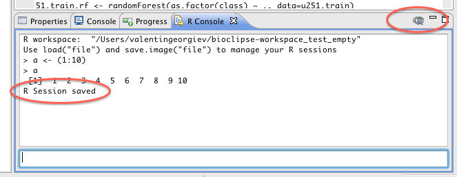

A button located in the right upper corner of the R Console view allows you to save the current R session. When pressed, all data objects and loaded packages are saved in a .RData file in the Bioclipse workspace directory. Next time Bioclipse is started this file will be found during the R initialization process and the previous session will be restored.
